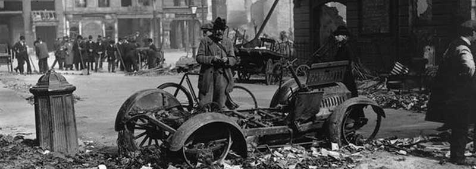
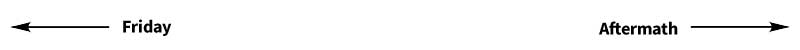

Saturday April 29
By Saturday monring the British have effectively cordoned off the city centre. In the fishmonger's shop at 16 Moore Street that was now their headquarters, the leaders held a council of war. Pearse's decision to surrender was most likely influenced by the sight of three elderly men laying dead on Moore Street despite the white flags in their hands, although this story may be apocryphal, and the resultant fear that more lives would be lost. Elizabeth O'Farrell, a nurse who was one of the three Cumann na mBan members who were still with the leaders after their escape from the GPO, was asked to step outside with a white flag at 12.45. The British stopped firing and called her up to the barricade at the Great Britain (Parnell) Street end of Moore Street. At first the officer in charge merely warned her to get herself and the other two women out of No. 16 but he reconsidered and brought her to a more senior officer. She passed on the message that "The commandant of the Irish Republican Army wishes to treat with the Commandant of the British Forces in Ireland." The officer scoffed at the term Irish Republican Army, but kept her prisoner until Brigadier General Lowe arrived. Once he heard Perse's message, he sent O'Farrell back to Moore Street with the message "That General Lowe would not treat at all until Mr. Pearse would surrender unconditionally", and he allowed one half hour before hostilities would continue. It was about 2.30 when she delivered this message to Pearse, the matter was discussed and O'Farrell was again sent back to Lowe with a note. Lowe again insisted that an unconditional surrender was the only way. O'Farrell returned with this to Pearse and, after a short council, Pearse accompanied her back to General Lowe's position.
(Topical Press Agency/Getty Images)
It was now about 3.30 in the afternoon, when General Lowe received Commandant Pearse at the end of Moore Street. Pearse symbolically handed up his sword to Lowe, who said he would allow the other commandants to surrender. He suggested that Nurse O'Farrell would be detained for the night in order that she might be brought around in the monring to take Pearse's orders for surrender to the other rebel occupied sites, after which she would be set free. This was agred upon and Pearse was then taken away in a motorcar down Sackville street under armed guard.
Less than an hour later, Lowe gave O'Farrell the following order to take to the rebels in Moore Street
“Carrying a white flag, proceed down Moore Street, turn into Moore Lane and Henry Place, out into Henry Street, and around the Pillar to the right hand side of Sackville Street, march up to within a hundred yards of the military drawn up at the Parnell Statue, halt, advance five paces and lay down arms.”
O'Farrell was then accompanied to the Four Courts where she delivered the order to a very strongly entrenched Ned Daly at the corner of Church Street. Daly wasn't at all happy about it but accepted the order. O'Farrell was then returned towards Sackville Street, and given food and a bed for the night at the National Bank building. At about 7.45, Daly's troops from the Four Courts marched up Sackville Street, and were lined up outside Crane's , not far from what remained of the GPO. Shortly after that, the men from Moore Street arrived, were lined up and their arms lain down.
